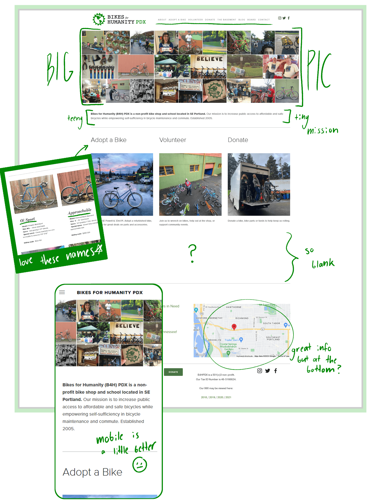
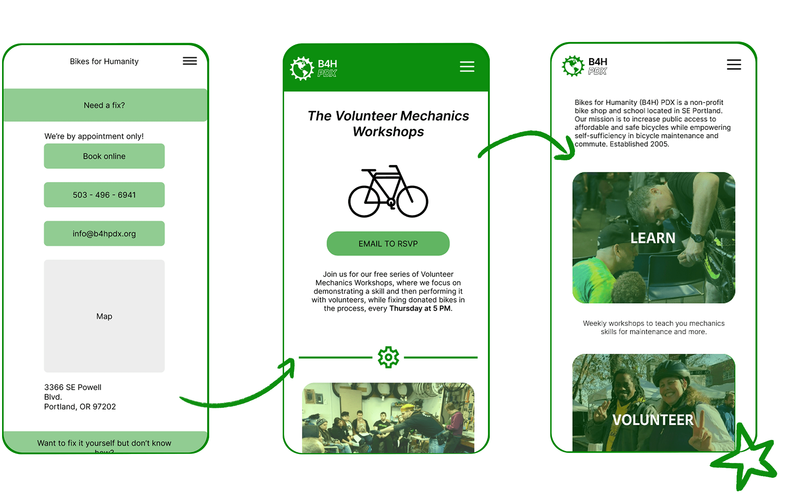
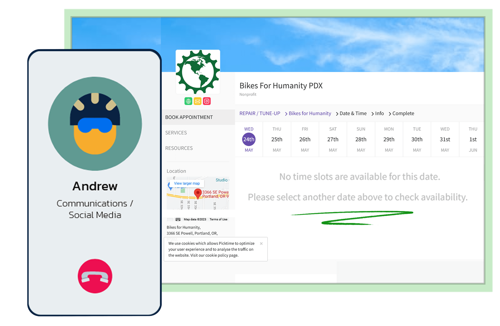
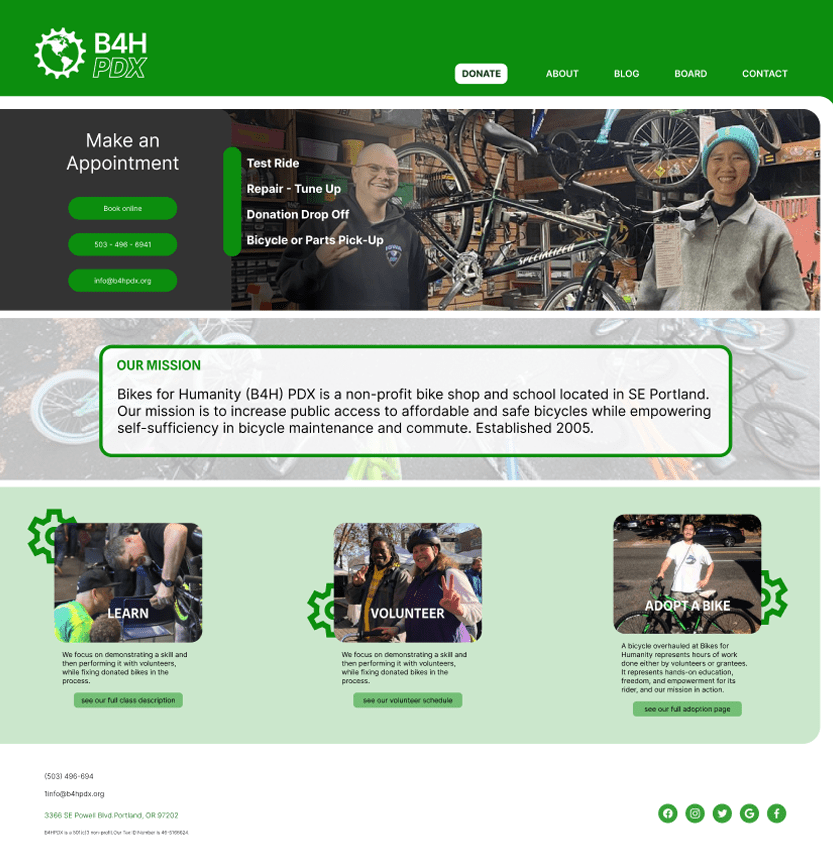

Bring a trail map because this site lost me at first.
We loved their goal and how their website obviously had soul poured into it. Full of personality, pictures, and hidden little details about each bike they sell. The resources were amazing but were buried deep within the site. Finding the signing up sheet for a simple-tune up led you on a wild goose chase from the home page to their Instagram to a link tree then finally to a completely separate website with timeslots available. We wanted to streamline the experience and highlight the organization’s personality.
Sometimes basic is better. It can be scary to build a community when you don't know where to look.
Initial user tests and sketches showed that users wanted to be a part of their biking community but felt overwhelmed by where to start. So we simplified the web interface to make it more welcoming and less text heavy. We also moved the appointment options from Instagram onto the homepage; front and center.
Let's be real, how will this help?
We kept in touch with the Bikes for Humanity PDX Communications Manager, Andrew, who was kind enough to give us some real-world feedback about how our updates would affect the nonprofit. He agreed that they’d love to highlight the workshop and class schedules but they didn’t want to advertise the tune-up and appointment services as heavily due to high demand on their end.
Bringing the community forward. Fixing a flat is easier with friends.
So we finalized by adding links to a separate class schedule page that not only elevated the class options but demystified many of their other resources. In the future, I’d love to work on a community page to encourage strengthening those community bonds and growing their reach to include new and upcoming cyclists.

Need something
creative?
hit me up
Or keep this tab open forever, you'll come back to it later... right?
Evan Dunham, UX Engineer